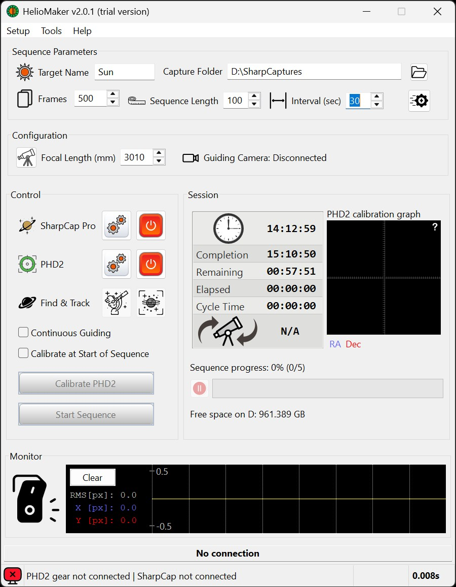

This section explains how to configure HelioMaker's internal settings to work seamlessly with SharpCap Pro, PHD2, and optional advanced features.
Please note that this section focuses solely on HelioMaker's internal configuration settings. The standalone configurations of SharpCap Pro and PHD2 - such as their guiding, imaging, and camera settings - are not covered here. For those, refer to the respective program documentation and other sections of this manual for detailed guidance.
While most settings in this section are configured initially, you can revisit and modify them at any time. Additionally, runtime controls and parameters are accessible directly from the main screen for quick adjustments during imaging sessions. These runtime options are discussed in the Operational Section of this manual.
To ensure HelioMaker is properly configured for actual imaging, it is mandatory to follow all the subsections listed above. Start with SharpCap Pro Configuration, followed by PHD2 Configuration, and complete the setup with Advanced Settings Configuration. Verifying your system using the Checking System Configuration section is highly recommended to avoid any operational issues.
The screenshot below displays the gear icons for accessing the SharpCap Pro and PHD2 configuration dialogs, as well as their respective Link buttons for connecting these applications to HelioMaker. Detailed setup instructions for these dialogs are provided in the following subsections. Additionally, the screenshot highlights the Setup menu, which can also be used to open the same configuration dialogs.
